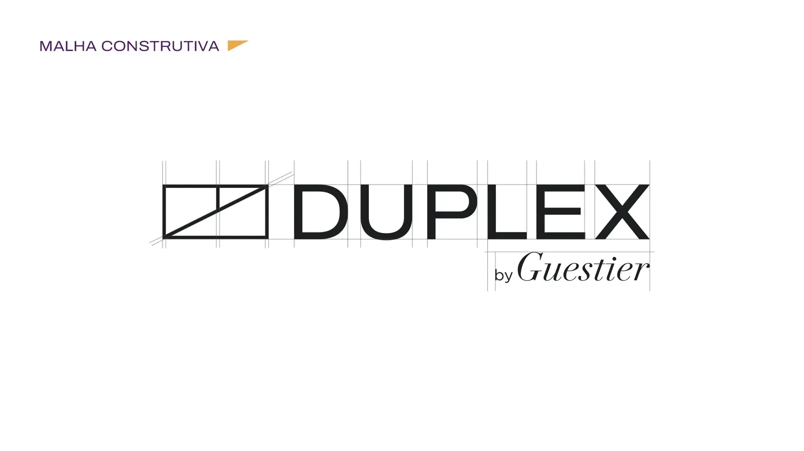
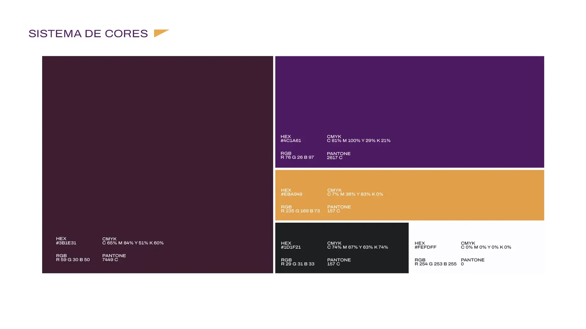
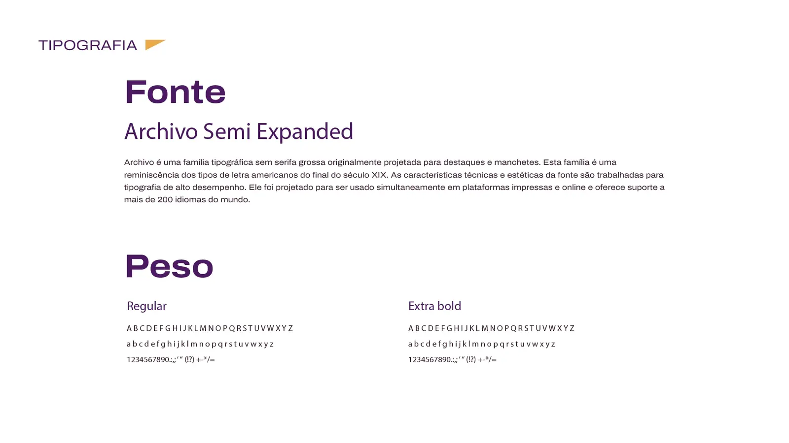
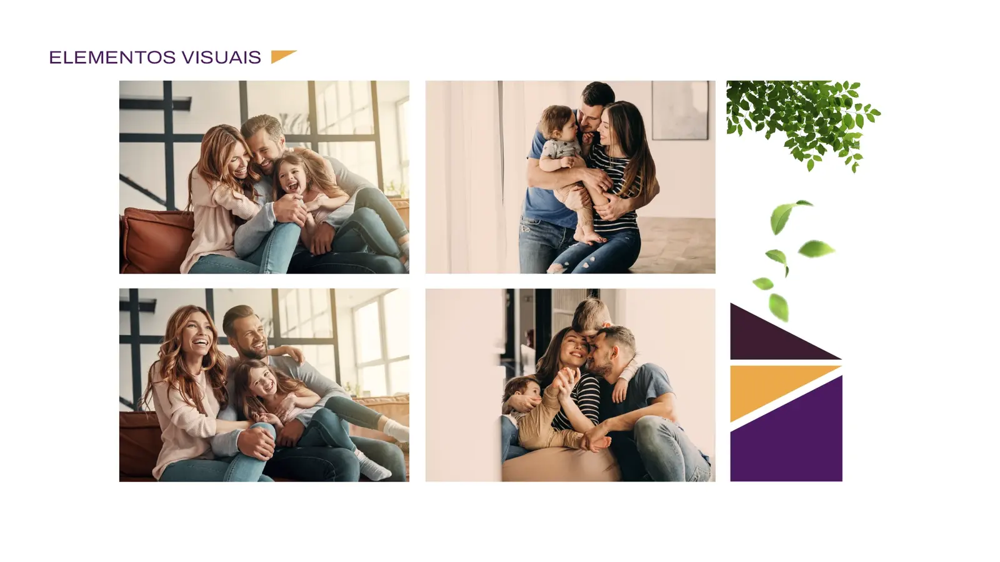
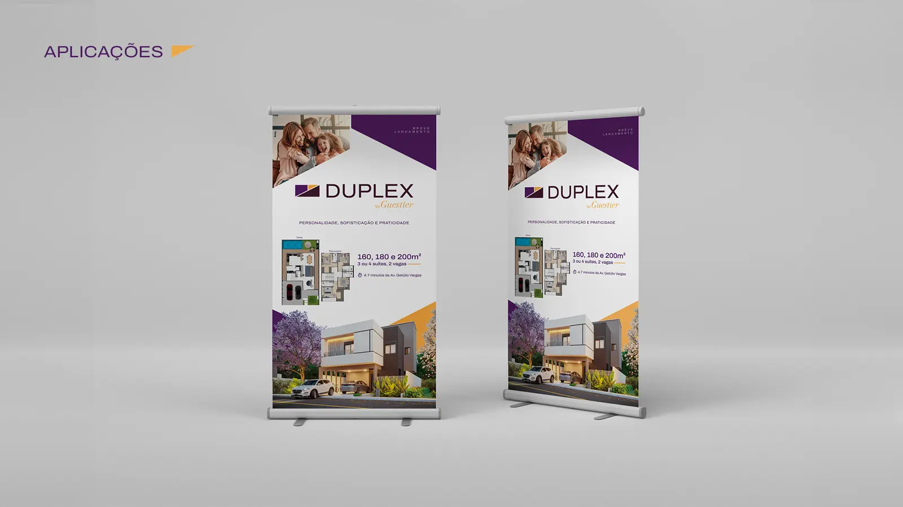
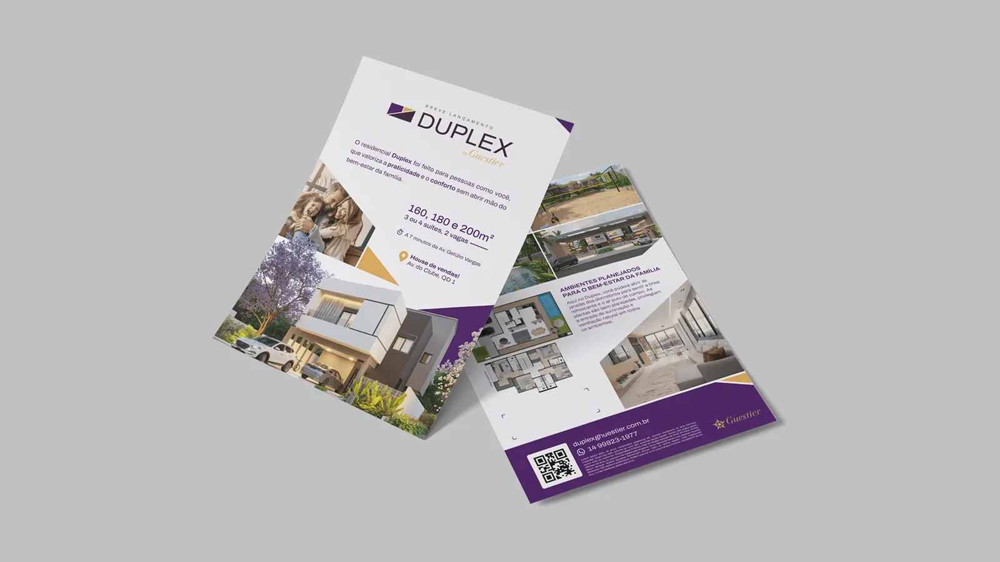
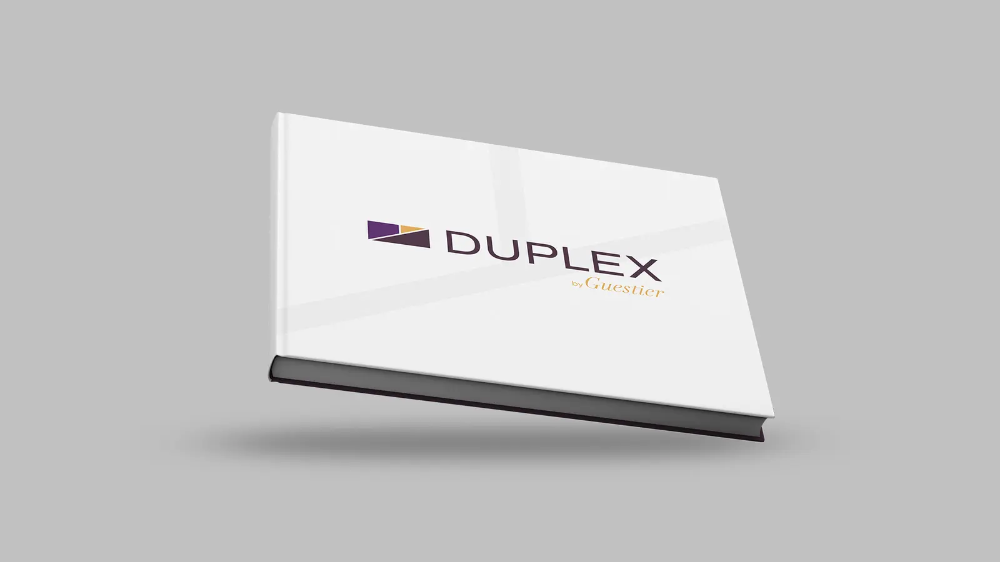

Empreendimento residencial
Duplex by Guestier

A logo nasce da seção de uma casa duplex. Um trapézio e dois triângulos representam o céu, o térreo e o piso superior do empreendimento.
O trapézio traduz o céu e a natureza que tangenciam o projeto. O triângulo inferior, maior, representa o térreo. O triângulo superior, menor, representa a área privativa e traz a sensação de privacidade e exclusividade ao pavimento de cima.
A tipografia foi desenvolvida para transmitir solidez e sofisticação, e leva a assinatura da Guestier, marca que incorpora o empreendimento. Uma identidade que mostra a casa antes mesmo de ela existir.











